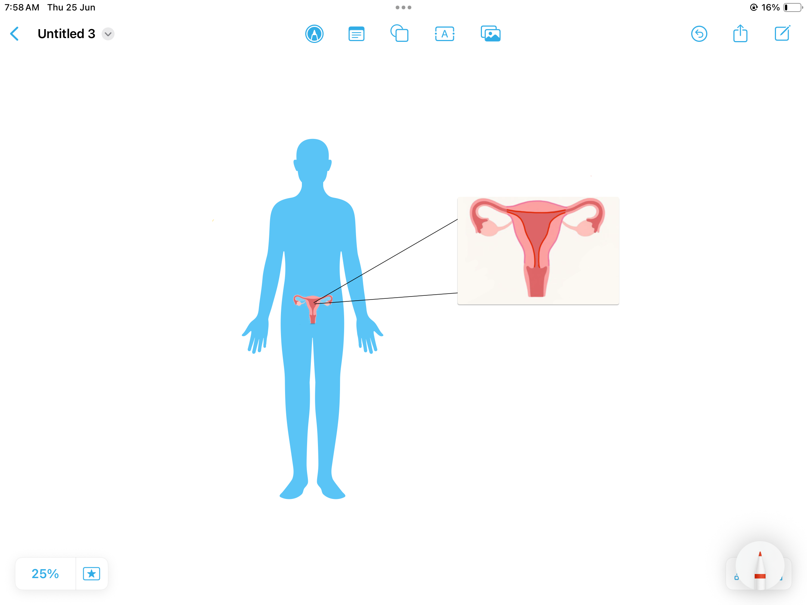
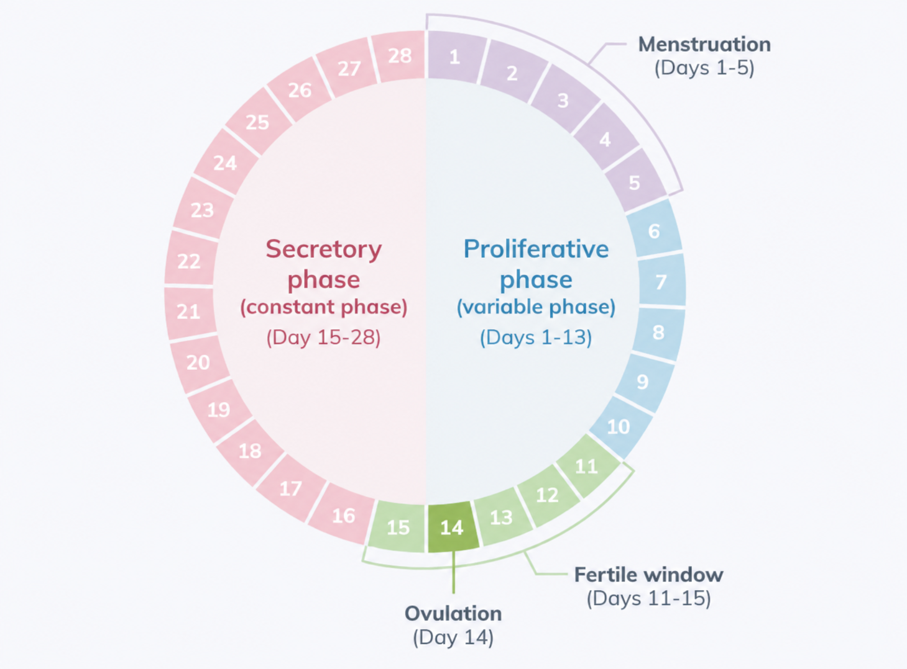
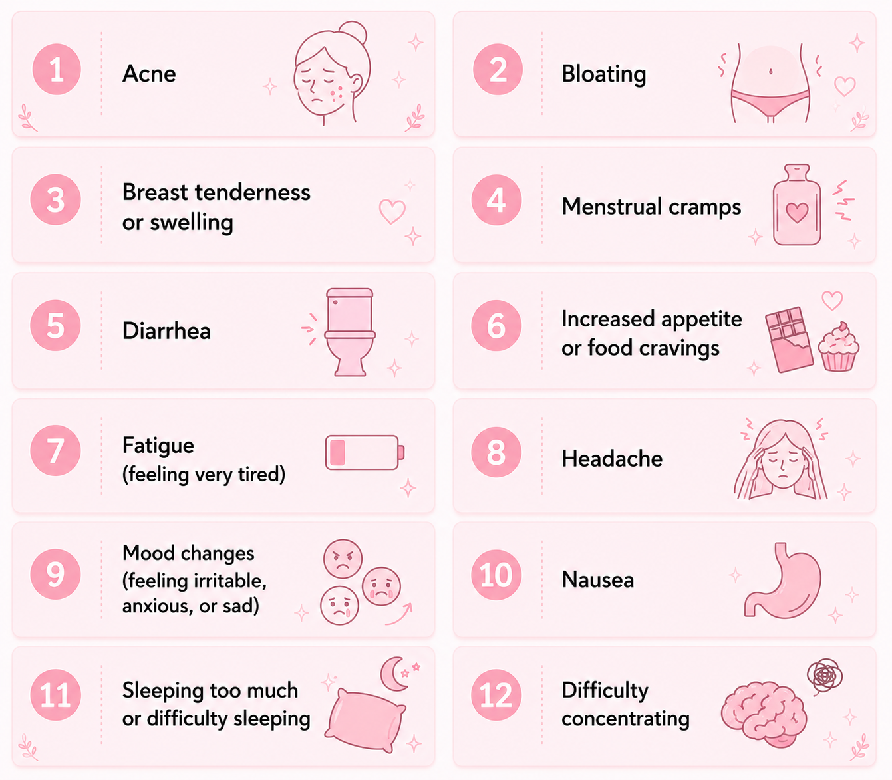
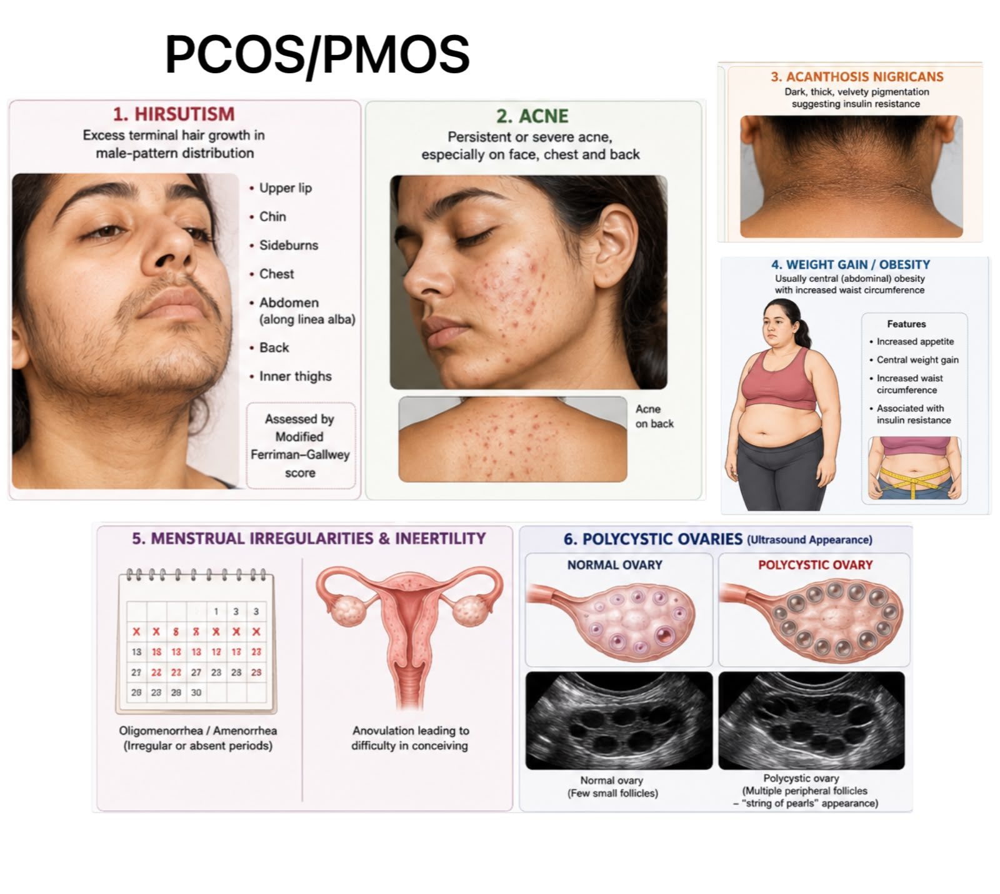

Hormones lead the way
Changes in ovarian hormones guide the cycle and the buildup of the uterine lining.
PERIODS ARE NORMAL. TALKING HELPS.
A clear, kind guide to menstruation, period care and the signs worth discussing with a health professional.
Start with the basics ↓
Menstruation is a natural part of life — not something to hide, fear or be ashamed of.
01 / THE BASICS
WHAT IS MENSTRUATION?
Each cycle, hormones prepare the uterus for a possible pregnancy. If pregnancy does not happen, the lining leaves the body as blood and tissue through the vagina. That is menstruation.
Changes in ovarian hormones guide the cycle and the buildup of the uterine lining.
Flow, timing and symptoms can vary between people and from one cycle to the next.
Periods usually begin at puberty and naturally stop at menopause.
WHAT CHANGES THROUGH THE CYCLE
During a period, the lining is shed. Afterward, it begins to build again in response to changing hormones. The cycle then continues into its next phase.
YOUR MENSTRUAL CYCLE
A cycle is counted from the first day of one period to the first day of the next. Many cycles happen every 21–35 days, and bleeding commonly lasts 3–7 days. These are helpful reference points, not a test to pass.

02 / PERIOD CARE
BEYOND BLEEDING
Some people notice cramps, low energy, headaches, bloating, tender breasts or mood changes around their period. Keep track of what feels usual for you — it can make patterns easier to spot and discuss.

Track dates, flow, pain and symptoms in a way that works for you.
Comfort, movement, food and rest can look different every month.
You deserve support when symptoms are worrying or disrupt daily life.
03 / COMMON CONCERNS
WHEN SOMETHING FEELS DIFFERENT
Periods can change for many reasons. Severe cramps, a heavier flow, missed periods or irregular timing are all worth noting. PCOS is one condition that can affect hormones and periods; only a qualified clinician can assess what is going on for you.
Seek care when pain is severe, causes nausea or vomiting, limits movement, or is not helped by usual pain relief.
Make an appointment if bleeding lasts more than 7 days, you soak through pads hourly, or you feel dizzy, very tired or unusually pale.
If pregnancy is ruled out and periods are absent for three consecutive cycles, discuss it with a health professional.
PCOS / PCOD
PCOS is a health condition that can affect hormones and periods. The infographic shows a range of features that can be associated with PCOS; it is not a self-diagnosis tool. A clinician can help you understand your own symptoms.

WHEN TO SEEK HELP
If you are concerned about your symptoms, trust that feeling and ask for care. Urgent or sudden symptoms may need prompt medical attention.
Share this guide ↗Sudden or worsening pelvic pain
Especially pain that feels severe or different from your usual cramps.
Very heavy flow
Bleeding for more than 7 days or soaking pads hourly.
Periods absent for over 90 days
When pregnancy has been ruled out.
Fever or chills with menstrual products
Seek medical advice promptly.
Bleeding between established cycles
Spotting is useful to mention to a clinician.